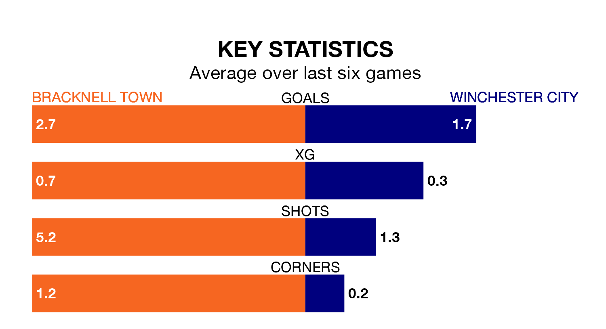

Bracknell Town are on a fantastic run ahead of hosting Winchester City on Saturday, with 15 points collected from their last six games.
Bracknell have picked up five wins and one loss in their last six Southern League Premier – South games, and face a Winchester side whose last six games have brought three wins and one draw.
With 75 goals in 38 games so far this season, Bracknell are the league's second-highest scorers with 2.0 goals per game. And they are conceding fewer than average, letting in 62 goals at a rate of 1.6 per game.
Winchester, meanwhile, are below average scorers, with 1.6 goals per game, compared to a league average of 1.7. They have also conceded 1.6 goals per game.
Town are fifth in the table after 38 games, of which they have won 19 and drawn four, earning 61 points.
City are five places behind the hosts in 10th, with 13 wins and 11 draws putting them on 50 points.
In the last three years, Bracknell and Winchester have played each other on three occasions. Bracknell won two of them and Winchester one.
Their last meeting was on December 5, when Winchester won 5-0 at home.
Bracknell's last match was on April 6, a 3-1 win against Basingstoke Town.
Winchester beat Hungerford Town 1-0 last time out, also on April 6.
Updated: 11:20 (UTC), 09/04/24